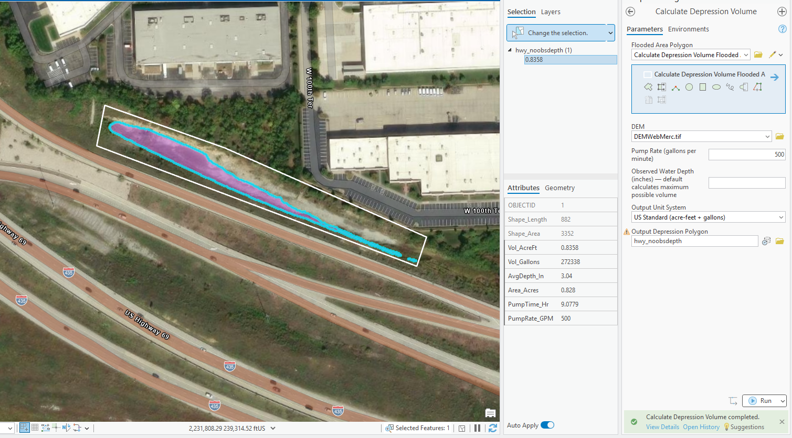
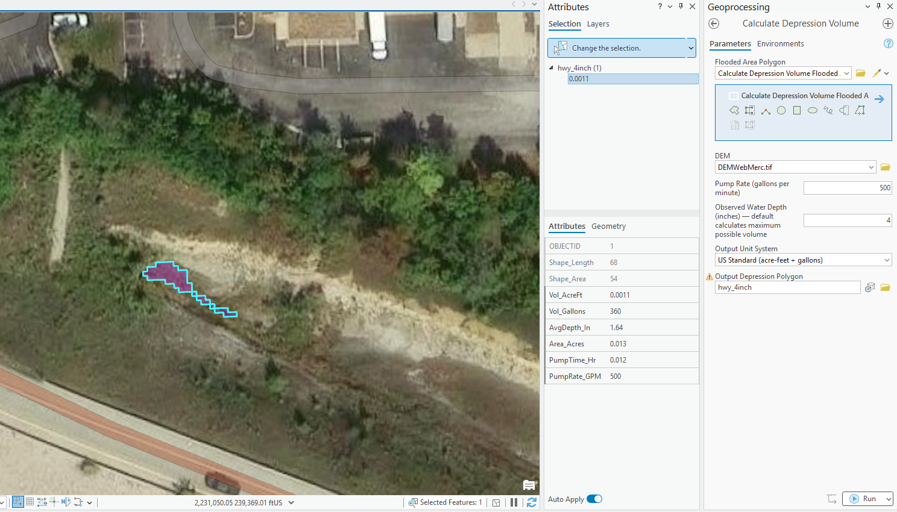

Overview
Field crews responding to flooding need quick answers: how much water is here, and how long will it take to pump out? This tool answers both questions using LiDAR terrain analysis and straightforward pump time math.
Draw a polygon around the flooded area, enter a pump rate and optionally an observed water depth, and the tool returns volume estimates and pump-out time using the DEM terrain surface to calculate depression geometry. Built for stormwater field operations and emergency response at the City of Lenexa.
The toolbox runs two modes: a terrain Fill analysis mode that identifies all natural depressions within the drawn polygon and calculates maximum holding volume, and an observed depth mode that sets the water surface at a user-entered depth above the minimum terrain elevation for on-site volume estimation.
Requirements
ArcGIS Pro 3.x · Spatial Analyst extension · 3D Analyst extension · Bare-earth LiDAR DEM in projected coordinate system
Key Outputs
Depression volume (acre-feet, gallons, or m³) · Average water depth · Flooded area in acres · Estimated pump-out time · Output depression polygon
Skills Demonstrated
Python / arcpy · ArcGIS Toolbox development · LiDAR terrain analysis · Stormwater GIS · Field operations support
Screenshots
Tool in Action
No observed depth mode. Runs a terrain Fill analysis to identify all natural depressions within the drawn polygon and calculates maximum holding volume for each.

With 4 inches observed depth. Sets the water surface at minimum terrain elevation plus the entered depth — use this when standing next to a specific flooded area and can observe the water depth directly.
Limitations
Known Constraints
Observed Depth Anchors to Polygon Minimum
The water surface is set relative to the lowest point in the drawn polygon. Draw a tight polygon around one specific flooded area — on sloped sites the minimum may be far from where you're standing, producing unexpected results.
No-Depth Mode Finds All Depressions
Fill analysis identifies every topographic depression within the polygon, including small LiDAR noise artifacts. In flat areas this may produce many small scattered polygons — each represents a real terrain depression.
Static Volume Estimate
The tool does not account for subsurface drainage, infiltration during pumping, or inflow from upstream areas during an active storm event.
DEM Resolution Affects Accuracy
A 1-meter LiDAR DEM produces more accurate estimates than a coarser DEM. Small depressions may not be captured at lower resolutions. Results are operational estimates, not engineering calculations.